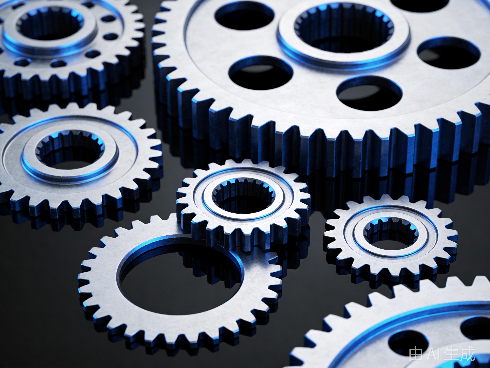
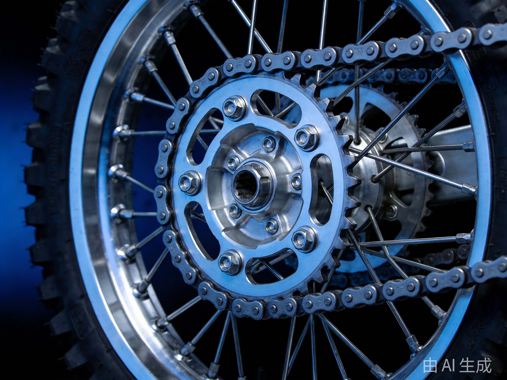
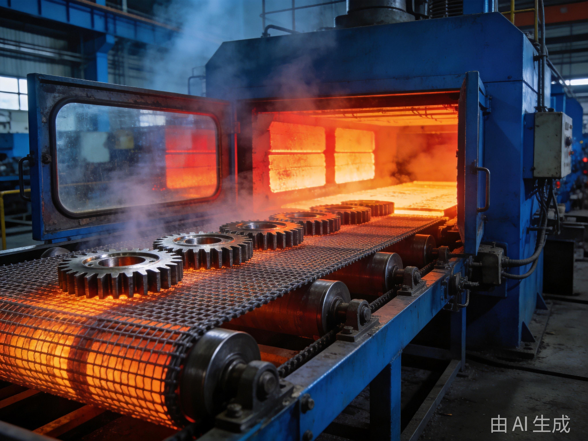
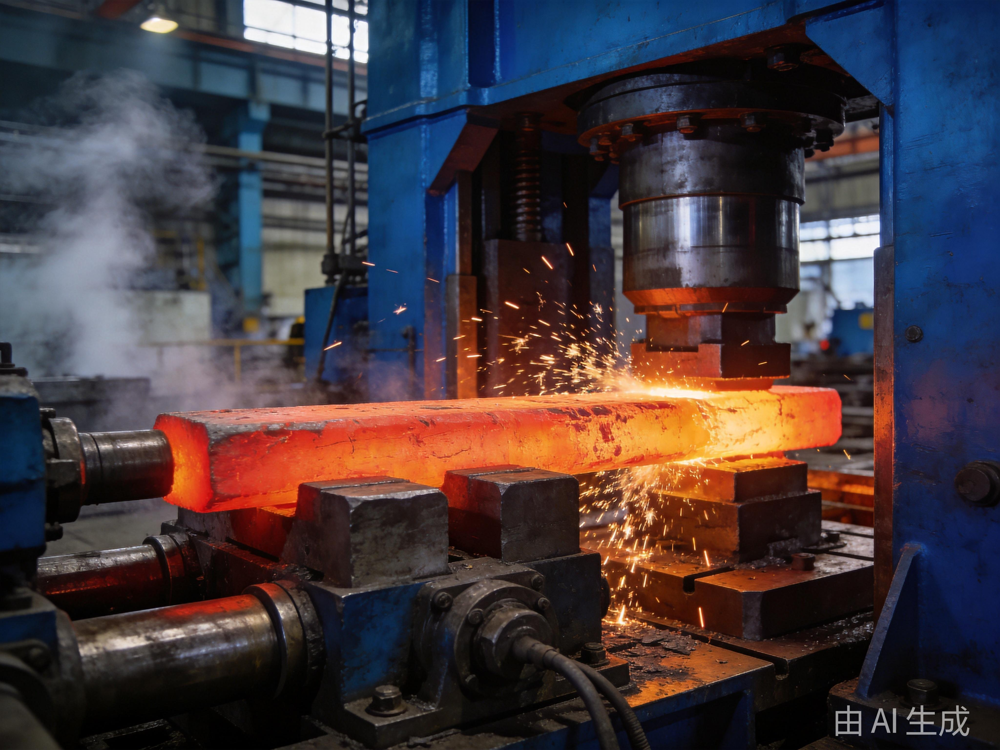

产品与服务
圆皕齿轮专注于动力传动零部件的研发与制造，产品覆盖通机齿轮、摩托车链轮两大核心品类，同时提供热处理与锻压外协加工服务。

技术参数
材料20CrMnTi / 20CrMo / 40Cr
精度等级GB/T 10095 7级及以上
齿面硬度HRC 58-62
模数范围0.5 — 4.0
最大外径φ200mm
年产能力1500 万件

技术参数
材料20CrMnTi / 45# 钢
齿数范围12T — 52T
节距规格420 / 428 / 520 / 525 / 530
齿面硬度HRC 58-62
表面处理发黑 / 镀锌 / 磷化
年产能力600 万件

年产能 · 4.2 万吨
多用炉渗碳线2 条
井式渗碳炉多台
网带式连续炉1 条
高频感应设备多台
深冷处理设备1 套
炉温均匀性±5℃
Outsourcing Service · 03
热处理外协加工
年热处理产能 4.2 万吨，为重庆及周边地区制造企业提供渗碳淬火、调质、高频淬火、正火、退火等全品类热处理外协服务。设备齐全、工艺成熟、交期稳定。完善的质量检测体系确保每批次热处理质量可追溯。
服务项目
| 工艺 | 适用材料 | 典型应用 |
|---|---|---|
| 渗碳淬火 | 20CrMnTi / 20CrMo | 齿轮、轴类 |
| 调质 | 40Cr / 42CrMo | 轴类、连杆 |
| 高频淬火 | 45# / 40Cr | 齿轮齿面、导轨 |
| 正火 / 退火 | 各类碳钢、合金钢 | 毛坯预处理 |
质量保证
炉温均匀性校验（±5℃）
硬度检测（洛氏、维氏）
金相组织分析
渗层深度检测
每批次留样追溯

年产能 · 4.5 万吨
精密模锻≤ 5kg
自由锻≤ 50kg
辊锻长杆件
切边 / 冲孔配套
热模锻压力机多吨位
材料利用率行业领先
Outsourcing Service · 04
锻压外协加工
年锻压产能 4.5 万吨，拥有精密模锻、自由锻、辊锻等多条生产线，可为齿轮、链轮、法兰、轴类等零部件提供高品质锻压毛坯。材料利用率高、纤维组织合理、机械性能优异。模具设计与寿命管理经验丰富。
服务项目
| 工艺 | 规格范围 | 典型产品 |
|---|---|---|
| 精密模锻 | ≤ 5kg | 齿轮毛坯、链轮毛坯 |
| 自由锻 | ≤ 50kg | 轴类、法兰 |
| 辊锻 | 长杆件 | 连杆、扳手 |
| 切边 / 冲孔 | 配套 | 锻件后处理 |
质量保证
模具寿命管理
锻件尺寸全检
超声波探伤（按需）
材料化学成分光谱分析